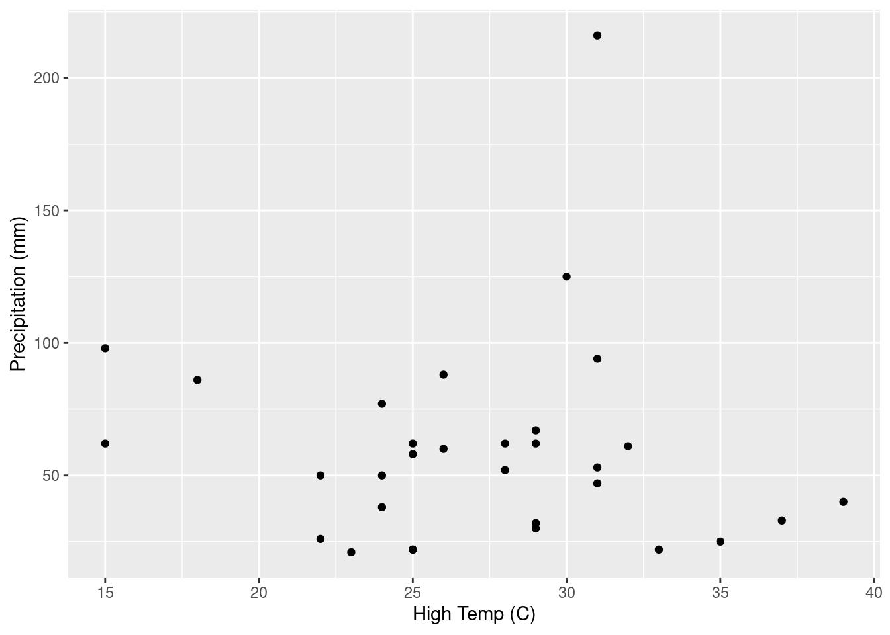
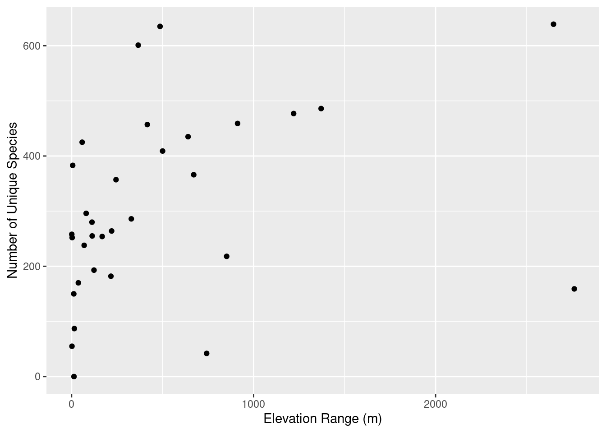

library(tidyverse)
eco_data <- read.csv("~/DATA/data/reserve-eco-data.csv")UC Reserve System Environmental Data
data
research
forest
reserve
fire
tutorial
–Basic Plotting of Environmental Variables
A short post on keeping small datasets in a data directory on my site, infiling the data, and then manipulating it.
The UC Reserve System has a many data sources including species lists. For this post I used the Plant Species List Excel File compiled by Brian P. Haggerty and Susan J. Mazer of UC Santa Barbara. I did a little data cleaning on this multi-tabbed spreadsheet.
Take a quick look at how the data is structured.
glimpse(eco_data)Rows: 36
Columns: 11
$ UC.Natural.Reserve <chr> "Año Nuevo Island Reserve (s…
$ X..Unique.Species..excluding.ssp....var.. <int> 0, 42, 55, 87, 150, 159, 170…
$ X..Taxa.including.ssp....var. <int> 0, 45, 72, 88, 151, 162, 173…
$ Reserve.Size..ha. <int> 10, 18624, 8, 11, 69, 22, 24…
$ Elevation.Low..m. <int> 0, 0, 0, 0, 0, 1250, 21, 0, …
$ Elevation.High..m. <int> 13, 742, 2, 15, 12, 4012, 58…
$ Elevation.Range..m. <int> 13, 742, 2, 15, 12, 2762, 37…
$ Precipitation..cm. <int> 50, 50, 22, 62, 77, 32, 46, …
$ Temperature.Low...C. <chr> "4", "10", "9", "12", "6", "…
$ Temperature.High...C. <chr> "24", "22", "25", "15", "24"…
$ X <chr> "24", "22", "25", "15", "24"…Data clean up and header labeling.
eco_data <- eco_data[1:10]
names(eco_data)[1:10] <- paste(c("reserve", "unique", "taxa", "size", "elevation_low", "elevation_high", "elevation_range","precip", "temp_low", "temp_high"))
names(eco_data) [1] "reserve" "unique" "taxa" "size"
[5] "elevation_low" "elevation_high" "elevation_range" "precip"
[9] "temp_low" "temp_high" eco_data$temp_high <- as.numeric(eco_data$temp_high)The classic precipitation vs. temperature ecological plot.
classic <- ggplot(eco_data, aes(x=temp_high, y = precip)) +
geom_point() +
scale_x_continuous(name="High Temp (C)") +
scale_y_continuous(name="Precipitation (mm)")
classic
Another quick plot.
elevation_plot1 <- ggplot(eco_data, aes(x=elevation_range, y = unique)) +
geom_point() +
scale_x_continuous(name="Elevation Range (m)") +
scale_y_continuous(name="Number of Unique Species")
elevation_plot1
ggsave("~/DATA/images/post_thumbnails/reserve_elevation_species.png")